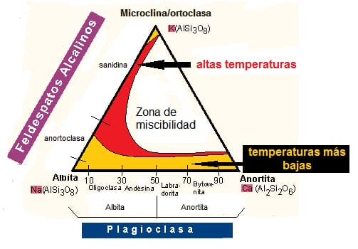

Cantidad de visitas en el sitio:
FELDESPATOS
Es el grupo mineral que conforma el 60% de la corteza terrestre, siendo componentes esenciales en las rocas ígneas (principalmente), metamórficas y sedimentarias s formula general es (k,Na, Ca, Ba, NH4)(SiAl)4 O8. Se divide en 2 grandes grupos, feldespatos potásicos y plagioclasas Los minerales mixtos con una composición entre el feldespato potásico y la albita se denominan feldespatos alcalinos, los minerales mixtos de composición entre albita y anortita forman el grupo de las plagioclasas. Las relaciones entre ellos se presentan en el sistema ternario de los feldespatos.
Las plagioclasas tienen distintas denominaciones según su composición química o es decir según su contenido en la componente Albita (Ab) y en la componente Anortita (An) Los feldespatos potásicos se cristalizan en 2 sistemas cristalinos diferentes (monoclínico – triclínico)